Screen 03 · s03-ax5-demo-steps

Reviewer: Claude (T19 agent) — AX5: the latest-session card stacks its poster above the text; status line and next-step row wrap without clipping.
References are AI-generated rasters: they guide layout, rhythm, palette and hierarchy; the written spec wins.
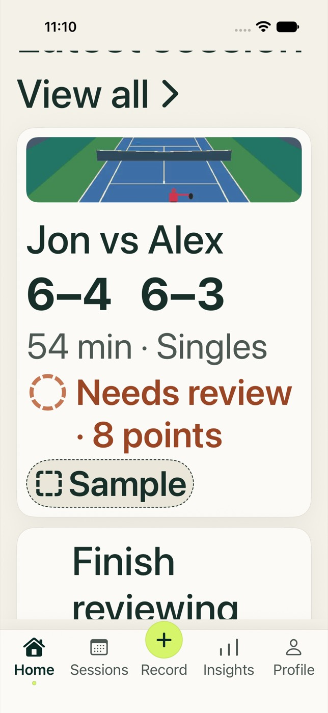
Reviewer: Claude (T19 agent) — AX5: the Latest session header stacks "View all ›" under its title (no mid-word break), then the card with its poster full width; nothing clipped.
Reviewer: Claude (T19 agent) — AX5: the latest-session card stacks its poster above the text; status line and next-step row wrap without clipping.
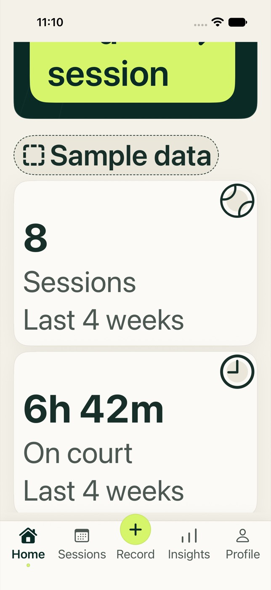
Reviewer: Claude (T19 agent) — AX5: the Sample data badge and the tiles stack full width (spec S03 Accessibility: tiles stack at accessibility sizes); values unclipped.
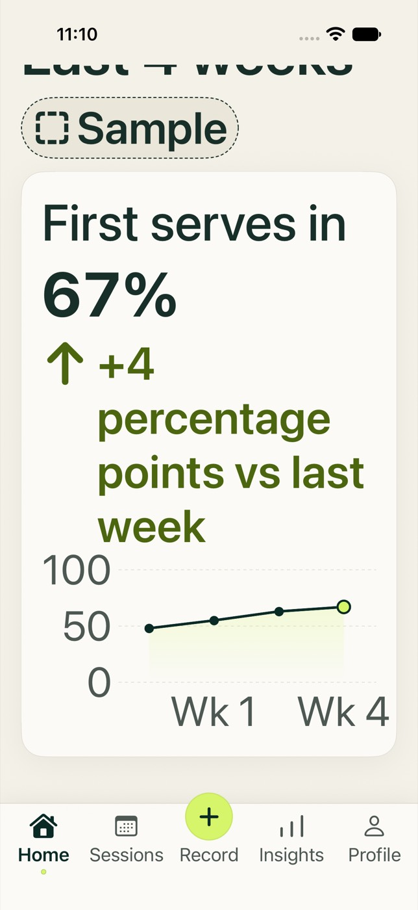
Reviewer: Claude (T19 agent) — AX5: the section title and its Sample badge stack; the trend card stacks the headline above the chart; the chart keeps its 160 pt minimum and thins x labels to the first and last week (spec S03 Accessibility).
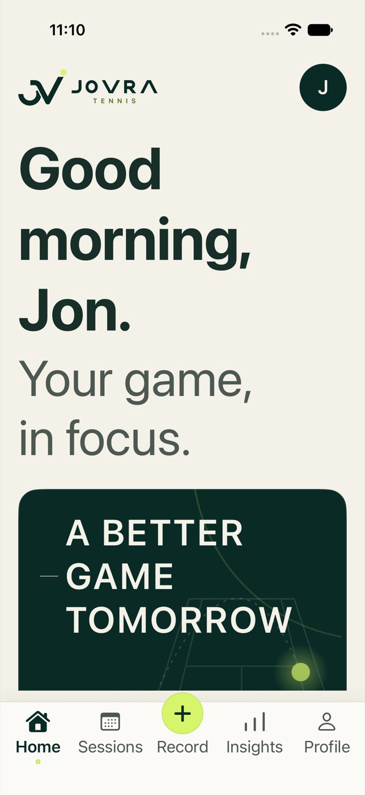
Reviewer: Claude (T19 agent) — AX5: greeting and hero wrap without clipping (foundation hero behaviour); no reference at this size; audit passed including textClipped.
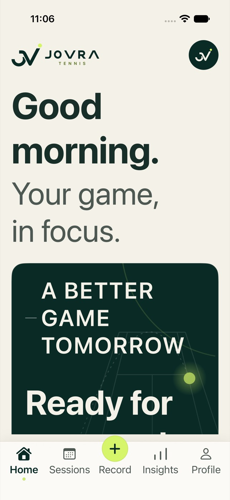
Reviewer: Claude (T19 agent) — the empty state at AX5; text wraps, both actions remain full-width buttons, audit passed.
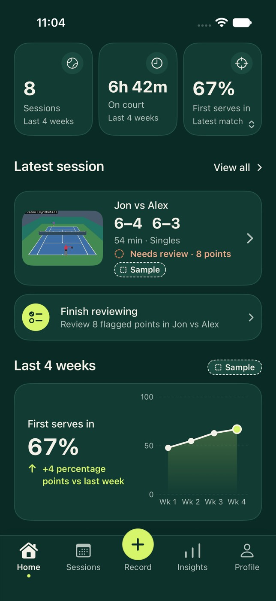
Reviewer: Claude (T19 agent) — matches the light lower half in dark; the chart line, area and the chartreuse last-week marker read on the forest card. Same documented deviations as s03-light-demo-lower.
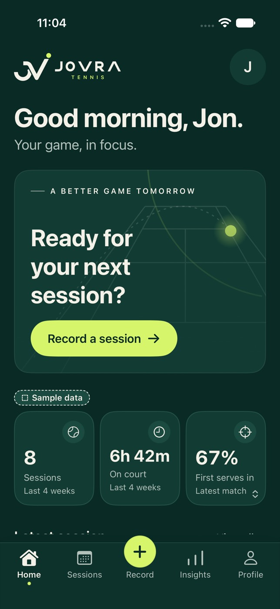
Reviewer: Claude (T19 agent) — matches the light composition on forest; every text role keeps its contrast (audit passed). Same documented deviations as s03-light-demo.
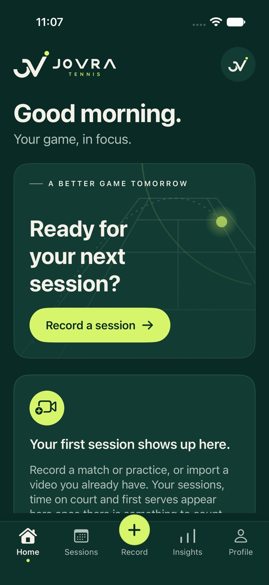
Reviewer: Claude (T19 agent) — the empty state in dark; same content as s03-light-empty, audit passed.
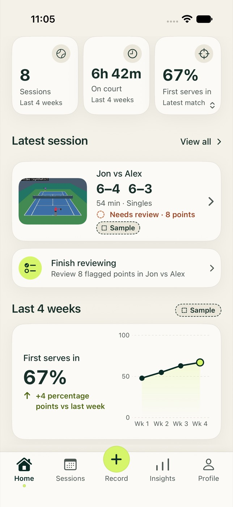
Reviewer: Claude (T19 agent) — matches: "Latest session" with "View all ›", card with a frame of the sample video, "Jon vs Alex", "6–4 6–3", "54 min · Singles", chevron. Documented deviations: the card's status line "Needs review · 8 points" and the "Finish reviewing" next-step row (spec S03 States "Needs review"; the sample match has eight flagged points), a Sample badge on the card; "This week" daily chart becomes the "Last 4 weeks" weekly chart 48/55/63/67 and "+4 pts" becomes "+4 percentage points vs last week" (spec S03 deliberate differences).
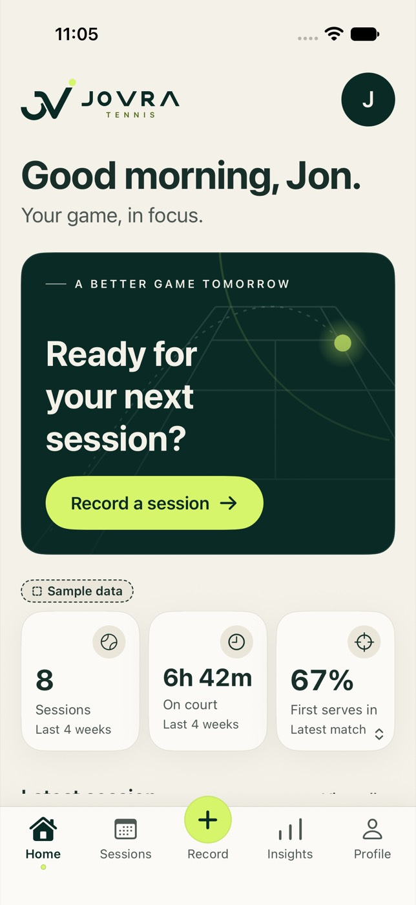
Reviewer: Claude (T19 agent) — matches: lockup and round avatar (the player's initial "J", spec S03 deviation), "Good morning, Jon.", "Your game, in focus.", forest editorial card with "Ready for your next session?" and the chartreuse "Record a session →", three tiles 8 / 6h 42m / 67%. Documented deviations: vector court art instead of the photo (spec S03); tiles carry scope captions "Last 4 weeks" / "Latest match" and the label "First serves in" (spec S03 layout 6); one "Sample data" badge over the tile row instead of one per tile (a badge inside each ~110 pt tile failed the Dynamic Type audit; every tile still speaks "sample data").
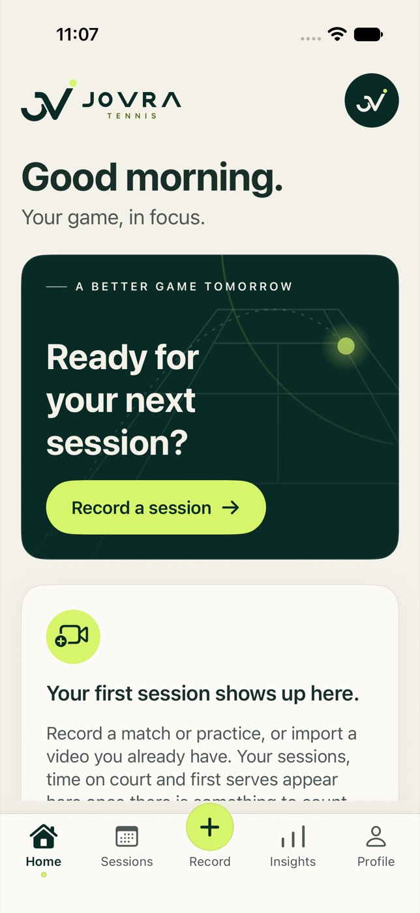
Reviewer: Claude (T19 agent) — no reference for this state; spec S03 States "Empty": greeting without a name ("Good morning."), hero, then one card "Your first session shows up here." with Record a session and Import a video, and no zero-filled tiles (issue #21 acceptance: Record and Import actions).